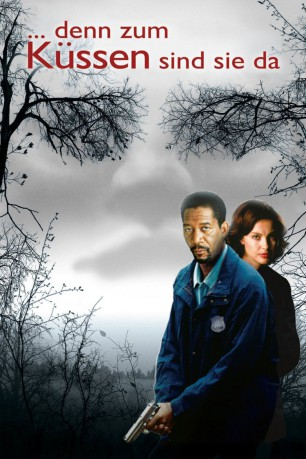

gesehen am 30.08.2016
gesehen am 30.08.2016Alternativ: Kiss the Girls gesehen am 30.08.2016
 
 IMDB-Wertung: 6.6 / 10
IMDB-Wertung: 6.6 / 10  Metascore:
Metascore: 
Polizeipsychologe Alex Cross macht sich Sorgen um seine Nichte. Die Collegestudentin ist spurlos verschwunden. Cross fährt nach Durham, um der Sache auf den Grund zu gehen. Dort erfährt er, dass fünf weitere Frauen vermisst werden und bereits zwei Tote gefunden wurden. Der örtliche Polizeichef hält nichts von Cross' Einmischung. Doch der lässt sich nicht aufhalten. Er trifft die junge Ärztin Kate, die aus dem Waldverlies des Killers entkommen konnte und ihn als Einzige gesehen haben könnte...
Jahr: 1997
Dauer: 115 Minuten
FSK: 16
Land: USA Studio: Paramount PicturesTonspuren: DD5.1 - ,
Untertitel: Deutsch,
Auflösung: 1080p (1920x824) Größe: 6420 MB
Genre: Thriller, Drama, Krimi, Mystery
Regisseur: Gary Fleder
Drehbuch: James Patterson, David Klass
Soundtrack: Mark Isham
Darsteller:
 Morgan Freeman als Dr. Alex Cross
Morgan Freeman als Dr. Alex Cross Ashley Judd als Dr. Kate McTiernan
Ashley Judd als Dr. Kate McTiernan Cary Elwes als Det. Nick Ruskin
Cary Elwes als Det. Nick Ruskin Tony Goldwyn als Dr. William 'Will' Rudolph
Tony Goldwyn als Dr. William 'Will' Rudolph Jay O. Sanders als Agent Kyle Craig
Jay O. Sanders als Agent Kyle Craig Bill Nunn als Det. John Sampson
Bill Nunn als Det. John Sampson Brian Cox als Chief Hatfield, Durham P.D.
Brian Cox als Chief Hatfield, Durham P.D. Richard T. Jones als Seth Samuel
Richard T. Jones als Seth Samuel Roma Maffia als Dr. Ruocco
Roma Maffia als Dr. Ruocco Jeremy Piven als Henry Castillo, LAPD
Jeremy Piven als Henry Castillo, LAPD Helen Martin als Nana Cross
Helen Martin als Nana Cross Tatyana Ali als Janell Cross
Tatyana Ali als Janell Cross Mena Suvari als Coty Pierce
Mena Suvari als Coty Pierce Melinda Renna als TV Reporter
Melinda Renna als TV Reporter Larry Cedar als Reporter
Larry Cedar als Reporter Tim Ahern als LAPD Sergeant
Tim Ahern als LAPD Sergeant W. Earl Brown als Locksmith
W. Earl Brown als Locksmith Meta Golding als Beautiful Girl
Meta Golding als Beautiful Girl John Cothran als FBI Agent at Lair
John Cothran als FBI Agent at Lair Robert Peters als FBI Agent on Robe
Robert Peters als FBI Agent on Robe Nancy Yee als Chinese Grandmother
Nancy Yee als Chinese Grandmother David Cowgill als Chief Resident
David Cowgill als Chief Resident Joe Inscoe als Large Cop
Joe Inscoe als Large Cop Anthony Backman als Competitive Swimmer , uncredited
Anthony Backman als Competitive Swimmer , uncredited Anna Maria Horsford als Vickie Cross , uncredited
Anna Maria Horsford als Vickie Cross , uncredited Tracey Walter als Clerk in Bookstore , uncredited
Tracey Walter als Clerk in Bookstore , uncreditedDatei: X:\3-Trilogie(A-F)\Alex Cross\Denn zum Küssen sind sie da (1997, FSK16, 1920x824).mkv seit 29.10.2015
Festplatte: HD Collection-2(A-Z)-3(A-M)
 Alle Filme aus Gruppe '3-Trilogie(A-F)\Alex Cross'
Alle Filme aus Gruppe '3-Trilogie(A-F)\Alex Cross'